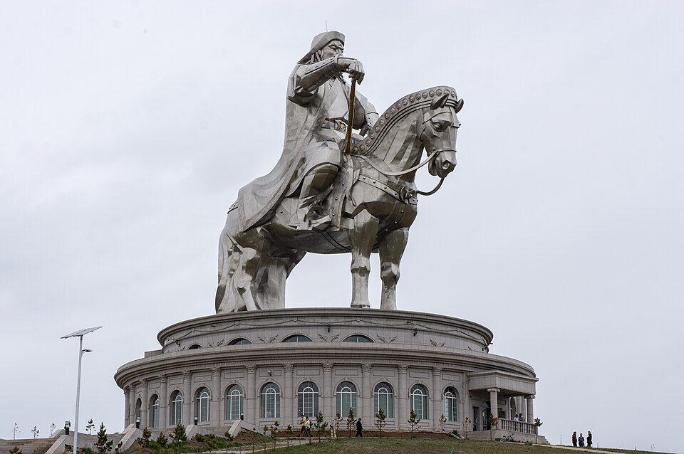

Монголд тавтай морил
Тал нутаг, гайхамшигтай байгаль, гүн үндэстэй нүүдлийн соёлтой Монголд тавтай морил. Энэ сайт танд заавал очих ёстой газрууд, амттай хоол, онцлог зан заншлыг танилцуулах болно.

Зургийн эх сурвалж: Чингис хааны морьт хөшөө
Энэ сайтаас та дараах зүйлсийг олж мэднэ:
- Говь цөл, Хөвсгөл нуур, Тэрэлжийн Үндэсний Цэцэрлэгт Хүрээлэн, Улаанбаатар зэрэг алдартай газрууд
- Монголын соёл, баяр наадам, уламжлалын тухай танилцуулга
- Бууз, хуушуур, айраг зэрэг алдартай хоолнууд
- Аяллаа төлөвлөхөд туслах маягт
- Цаг агаар, ачаа бэлтгэх, ёс зүйн зөвлөмжүүд
Хэрвээ та адал явдал, түүх эсвэл амар тайван байгаль хүсч байвал, Монгол таныг мартагдашгүй аялалд урьж байна. Мөнх хөх тэнгэрийн орныг туулж, нүүдлийн амьдралын хэмнэлтэй танилцаарай.
Сонирхолтой баримт: Монголд хүнээс илүү олон морь байдаг!